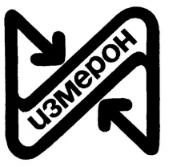

| Наименование |
Картинка |
Производитель |
Описание |
| Подземное оборудование |
 |

|
Подземное оборудование — производства НПФ «Измерон» (г. Санкт-Петербург), одного из лидеров в России на рынке внутрискважинного оборудования для нефтегазовой отрасли. В отличии от других производителей в НПФ «Измерон» организовано собственное производство резинотехнических изделий для внутрискважинного оборудования. |
| Фонтанная арматура |
 |
|
Фонтанная арматура — производства АО «АК «Корвет» (г. Курган), которой в настоящее время оснащаются эксплуатационные скважины АГКМ
Отличительной особенностью фонтанной арматуры производства АО «АК «Корвет» (г. Курган) является отсутствие моноблочной системы и как следствие повышенная ремонтопригодность и возможность унификации оборудования. |
| Подогреватель |
 |
|
Блок подогревателя устьевого. Подогреватель устьевой предназначен для подогрева ГЖС перед дросселированием с целью предупреждения гидратообразования при транспортировке головных установок газоперерабатывающего завода. Для максимальной эффективности работы горелочного устройства и полного сгорания топливного газа реализована функция автоматического регулирования соотношения «топливный газ/воздух». |
| БОУС
- блок обвязки устья скважины |
 |
|
БОУС
— блок обвязки устья скважины (в составе: блок автоматической подачи ингибитора коррозии, станция управления фонтанной арматурой, блок осушки газа, шкаф локальной САУ, системы электрооборудования);
Блок обвязки устья скважины предназначен для управления фонтанной арматурой, изме¬рения параметров работы скважины (давления, температуры), аварийного перекрытая потока газа от скважины при повышении или понижений давления в трубопроводе за допустимые пределы, подачи раствора ингибитора коррозии в продукцию скважин, осушки очищенного газа до заданных параметров.
|
| Вертикальное факельное устройство (факел) |
 new.jpg) |
|
Устройство факельное вертикальное предназначено для сжигания ГЖС при срабатывании предохранительных клапанов и расположено в 100 м от площадки скважины. ВФУ состоит из ствола факела, факельного оголовка, дежурных горелок, высоковольтного блока зажигания, оборудован системой электроис¬крового розжига, приборами контроля пламени. Особенным отличием является наличие встроенного в факельное устройство сепаратора и кинетического газового затвора (последовательно установленных конфузоров), что позволяет значительно сократить расход топливного газа. |
| Устройство горизонтальное горелочное |
 |
|
УГГ500-01 предназначено для сжигания пластовых смесей скважин на газовых и
Газоконденсатных месторождениях с термическим обезвоживанием,
Входящей в состав продувочных газов жидкой фазы, содержащей пластовые
воды, конденсат, раствор ингибитора коррозии,
остатки бурового раствора, промывочной жидкости и др. |